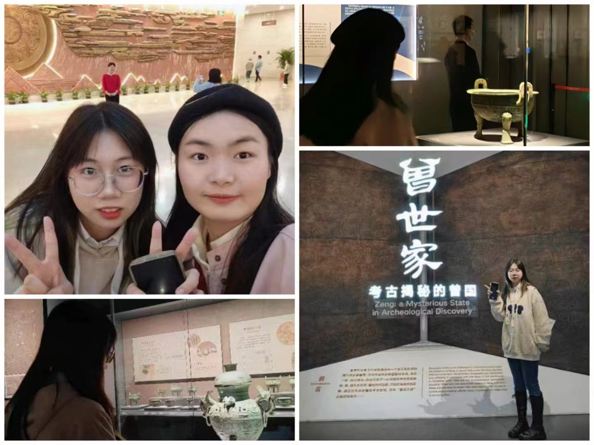

我的打卡记录
黄鹤楼黄鹤楼，屹立于江城武汉的蛇山之巅，自古以来便是文人墨客笔下的传奇之地。楼高入云，气势磅礴，飞檐翘角，宛如一只振翅欲飞的黄鹤。每当晨曦初露，黄鹤楼便沐浴在金色的阳光中，熠熠生辉，仿佛诉说着千年的沧桑与辉煌。 |
|---|
解封公园武汉解放公园，这座承载着城市记忆与希望的绿洲，静静地伫立在长江之畔，见证了武汉的沧桑巨变。公园内绿树成荫，花香四溢，每一步都仿佛踏入了一幅生动的画卷。 |
|

湖北省博物馆湖北省博物馆，如同一座历史的宝库，静静诉说着这片古老土地的辉煌与沧桑。步入博物馆大门，一股历史的厚重感扑面而来，仿佛穿越了时空的隧道，回到了那遥远的古代。 |
晴川阁晴川阁，坐落于长江之畔，如同一颗璀璨的明珠镶嵌在楚天的画卷上。这座古老的楼阁，见证了武汉的变迁，承载着历史的厚重与文化的积淀。 |
武汉大学樱花在春天的怀抱中，武汉大学仿佛被一片粉色的梦境轻轻笼罩。这里的樱花，如同天边的云霞，绚丽而浪漫，它们在微风中轻轻摇曳，宛如舞动的精灵，将春天的气息传递给每一个过往的行人。 |
宝华寺武汉宝华寺，坐落于长江之滨，黄鹤楼之侧，是一座历史悠久、文化底蕴深厚的古刹。它承载着岁月的痕迹，见证了武汉的沧桑变迁。 |